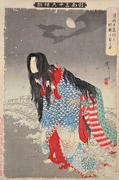
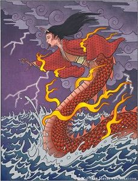

Un jour, un beau prêtre en visite du nom d'Anchin est tombé amoureux de la belle Kiyohime, mais après un certain temps, il a surmonté ses passions et s'est abstenu de toute autre rencontre. Kiyohime est devenu furieux de ce changement soudain et l'a poursuivi avec rage. Anchin et Kiyohime se rencontrèrent au bord de la rivière Hidaka, où le prêtre demanda à un batelier de l'aider à traverser la rivière, mais lui dit de ne pas la laisser passer avec son bateau. Lorsque Kiyohime a vu qu'Anchin lui échappait, elle a sauté dans la rivière et a commencé à nager après lui. En nageant dans le torrent de la rivière Hidaka, elle s'est transformée en un grand serpent ou dragon à cause de sa rage. Quand Anchin la vit venir à sa poursuite dans sa nouvelle forme monstrueuse, il se précipita dans le temple appelé Dōjō-ji. Il a demandé de l'aide aux prêtres de Dōjōji, qui l'ont caché sous la cloche bonshō du temple. Cependant, le serpent l'a senti se cacher à l'intérieur de la cloche et a commencé à s'enrouler autour. Elle frappa la cloche bruyamment à plusieurs reprises avec sa queue, puis cracha un souffle de feu si puissant qu'il fit fondre la cloche et tua Anchin.
Voici l'histoire de Kiyohime :
Mythe original :
 Interprétation dans la pop culture :

Dans Fate Grand Order, Kiyohime est une yandere qui est amoureux du personnage principal. Une yandere est un personnage qui est amoureux d'un autre et qui tue tous ceux qu'elle considère comme des rivaux. Elle peut tuer le personnage dont elle est amoureuse si elle pense qu'il n'y a aucune chance de sortir avec lui. Elle maitrise les pouvoir du feu et son noble phantasm (coup spécial) lui permet de se transfomer en serpent de feu et de brûler ses ennemies comme elle a brûler Anchin.